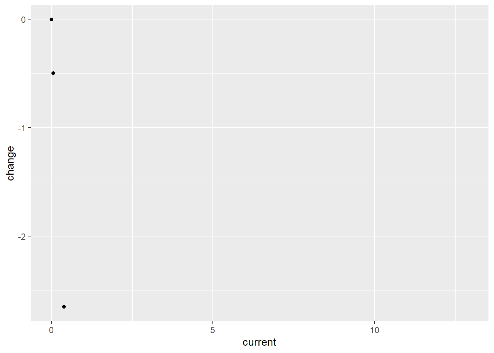

Premature deaths related to indoor air pollution data for many countries across the globe have been collected over three decades, which have been compiled in this data set as percentages of the population for a given year. Using the information, this analysis will attempt to infer two important characteristics that may offer insight into the cause of inadequate/unsafe indoor conditions; impact of GDP on the percent deaths is the first layer, and impact of average climates in the regions with similar GDP is the second. Firstly, exploratory analysis done to generate these hypotheses found that time will be a significant factor to consider, throughout this analysis.
Introduction
Since the earliest days of thinking about the dangers associated with pollution in the air, much of the conversation has been focused on the risks associated with our infrastructure –vehicles, energy, and manufacturing at the forefront. More recently, it is becoming more apparent that we are also in need of considering the risks associated with out indoor air pollutants, which is now understood to be a source of premature deaths worthy of concern.
WHO suggests indoor air pollutants can become well over 100x more concentrated in large, poorly ventilated indoor spaces both public and private. On top of that, it has been documented that people living in developed regions spend 80-90% of our lives indoors.
Some reports suggest as much as three billion individuals are impacted by toxic indoor air pollutants every day, with as many as 3.8 million deaths yearly being attributed to IAP exposure.
Defining Indoor Air Pollutants
Volatile Organic Compounds: emitted from everyday household items such as aerosol cleaners, plastic products, furniture, paints, candles/scented items, adhesives, and many other products. VOCs are the least understood of the indoor air pollutants, and many have still yet to be identified, let alone medically understood.
The five most common VOCs include benzene, formaldehyde, methylene chloride, tetrachloroethylene, toluene, xylene, and 1,3-butadiene
Particulate matter: Dust, smoke, dirt, and other small particles created from many sources and suspended in moving air. Some of the most significant indoor air pollutants are produced by combustion from cooking, heating, or smoking. PM ranges from a mild irritant to a major cause of death depending on the concentration and extent of exposure.
Burning biofuels like wood or crops produce significantly more hazardous particulate matter then fuels like ethanol or biodiesel. Wood contains heavy metals like arsenic, cadmium, and lead that can accumulate in soils and then get taken into the air, producing dust and ash from incomplete combustion.
Nitrogen Oxides: Also an aspect of biofuel combustion, NOx compounds are known to have significant adverse health affects affecting the respiratory and cardiovascular system, which has been linked to asthma, bronchitis, eye/skin/throat irritation, headaches & nausea as well as a weakened immune system
Carbon monoxide/dioxide: Both carbon monoxide and dioxide are hazardous in large concentrations and are produced by the combustion of all fuels, including gas. Carbon monoxide can be hazardous, with hundreds of deaths still caused in the US by accidental CO poisoning.
Radon: Second leading cause of lung cancer globally, radon is naturally released by soil, rocks, and water, which can release slowly and build up inside poorly ventilated homes.
Attaching package: 'janitor'
The following objects are masked from 'package:stats':
chisq.test, fisher.test
library(magrittr)
Attaching package: 'magrittr'
The following object is masked from 'package:purrr':
set_names
The following object is masked from 'package:tidyr':
extract
Rows: 8010 Columns: 4
── Column specification ────────────────────────────────────────────────────────
Delimiter: ","
chr (2): Entity, Code
dbl (2): Year, Deaths - Cause: All causes - Risk: Household air pollution fr...
ℹ Use `spec()` to retrieve the full column specification for this data.
ℹ Specify the column types or set `show_col_types = FALSE` to quiet this message.
Quick Summary of Data – Finding the Variables Present in the Data Set
iap_splits <-initial_split(indoor_pollution, prop =0.15,pool =1) exploratory_data <-training(iap_splits)test_data <-testing(iap_splits)head(exploratory_data) %>%rename(percent_deaths_by_household_pollution = deaths_cause_all_causes_risk_household_air_pollution_from_solid_fuels_sex_both_age_age_standardized_percent) %>%#shorten the long name kable(digits =c(1,0,0,2)) %>%kable_styling(bootstrap_options =c("hover", "striped"))
entity
code
year
percent_deaths_by_household_pollution
Somalia
SOM
2019
16.80
Micronesia (country)
FSM
2001
10.04
Cambodia
KHM
1990
17.91
Trinidad and Tobago
TTO
2016
0.01
Lesotho
LSO
2014
6.29
South Korea
KOR
1993
0.14
Observation:
This data set contains variables gathered across multiple years, listing the percent of deaths caused by indoor air pollutants created from indoor combustion. Given the amount of data present in this dataset, several potential hypotheses could likely be considered.
The data, listed by country and region, are mixed in the data set and will likely require some cleaning to separate. categorical data and contains variables that were collected over many years.
Depending on the scope of research, it may be more useful to focus on the data set containing regional data rather than country-specific to highlight what role climate plays in the effect of indoor air pollution.
In temperate climates, it is more likely to use biofuels for heating as well as cooking. Alongside the availability of insulation material for homes that reduced the ability for indoor and outdoor atmosphere gas exchange, this may be an essential factor that could be compared with this data.
Using the temporal variable that is available in this data, some conclusions could be made about the
focusing on the countries rather than regions in this data could be used to show how countries that have invested in new technologies or better homes could correlate with either improved or worsened indoor air quality. Suppose homes are made more insulated but old gas stoves and wood fires are built into them. In that case, it is possible that the data could show up to a point a worsened impact on indoor air quality is associated with a country’s growth in economic opportunity.
exploratory_data %>%mutate(country_region =countrycode(entity, origin ="country.name", destination ="region")) %>%group_by(country_region) %>%summarize("Lowest percentage of deaths"=min(deaths_cause_all_causes_risk_household_air_pollution_from_solid_fuels_sex_both_age_age_standardized_percent),"Highest percentage of deaths"=max(deaths_cause_all_causes_risk_household_air_pollution_from_solid_fuels_sex_both_age_age_standardized_percent),"Average percentage of deaths"=mean(deaths_cause_all_causes_risk_household_air_pollution_from_solid_fuels_sex_both_age_age_standardized_percent),"Standard Deviation"=sd(deaths_cause_all_causes_risk_household_air_pollution_from_solid_fuels_sex_both_age_age_standardized_percent)) %>%kable(digits =c(1,3,1,2,1)) %>%kable_styling(bootstrap_options =c("hover", "striped"))
Warning: There was 1 warning in `mutate()`.
ℹ In argument: `country_region = countrycode(entity, origin = "country.name",
destination = "region")`.
Caused by warning in `countrycode_convert()`:
! Some values were not matched unambiguously: Africa, African Region, African Union, Andean Latin America, Asia, Australasia, Caribbean, Central Asia, Central Europe, Central Europe, Eastern Europe, and Central Asia, Central Latin America, Central sub-Saharan Africa, Commonwealth, Commonwealth High Income, Commonwealth Low Income, Commonwealth Middle Income, East Asia, East Asia & Pacific - World Bank region, Eastern Europe, Eastern Mediterranean Region, Eastern sub-Saharan Africa, England, Europe, Europe & Central Asia - World Bank region, European Region, European Union, G20, High-income, High-income Asia Pacific, High-income North America, High-middle SDI, High SDI, Latin America & Caribbean - World Bank region, Low-middle SDI, Low SDI, Micronesia (country), Middle East & North Africa, Middle SDI, Nordic Region, North Africa and Middle East, North America, Northern Ireland, Oceania, OECD Countries, Region of the Americas, Scotland, South-East Asia Region, South Asia - World Bank region, Southeast Asia, Southeast Asia, East Asia, and Oceania, Southern Latin America, Southern sub-Saharan Africa, Sub-Saharan Africa - World Bank region, Timor, Tropical Latin America, Wales, Western Europe, Western Pacific Region, Western sub-Saharan Africa, World, World Bank High Income, World Bank Low Income, World Bank Lower Middle Income, World Bank Upper Middle Income
country_region
Lowest percentage of deaths
Highest percentage of deaths
Average percentage of deaths
Standard Deviation
East Asia & Pacific
0.005
23.5
6.39
6.7
Europe & Central Asia
0.002
11.6
1.79
2.8
Latin America & Caribbean
0.003
16.4
3.00
3.3
Middle East & North Africa
0.006
16.7
1.46
2.8
North America
0.003
1.2
0.18
0.4
South Asia
1.564
19.3
12.79
4.7
Sub-Saharan Africa
0.071
16.8
10.21
3.7
NA
0.002
17.7
5.54
5.1
Note
Observations:
0.0016 % deaths is extremely low, especially compared to the maximum at 23%, and even the average of 5.57 shows a significant spread across data points this broad range suggests
This data does not provide particularly useful information since the data is not group by year. Potentially plotting the mean percentage across time could provide a useful visual to see how this data changes.
the maximum deaths at 23.04% is extremely high, and I am very curious at which country/region was measured this high– potentially an outlier?
5.77 standard deviation seems very large for the size of the data set being considered. This will be interesting to reference when seperating by country, region or year.
exploratory_data %>%rename(percent_deaths_by_household_pollution = deaths_cause_all_causes_risk_household_air_pollution_from_solid_fuels_sex_both_age_age_standardized_percent) %>%mutate(country_region =countrycode(entity, origin ="country.name", destination ="region")) %>%mutate(continent =countrycode (entity, origin ="country.name", destination ="continent")) %>%filter(continent!=0) %>%ggplot() +geom_histogram(mapping =aes(fill = country_region, x= percent_deaths_by_household_pollution,na.rm =TRUE)) +facet_wrap(~country_region) +labs(x ="Percent of deaths caused by indoor air pollution",y ="Count",title ="Distribution of Indoor Air Pollution-Related Deaths by Region")
Warning: There was 1 warning in `mutate()`.
ℹ In argument: `country_region = countrycode(entity, origin = "country.name",
destination = "region")`.
Caused by warning in `countrycode_convert()`:
! Some values were not matched unambiguously: Africa, African Region, African Union, Andean Latin America, Asia, Australasia, Caribbean, Central Asia, Central Europe, Central Europe, Eastern Europe, and Central Asia, Central Latin America, Central sub-Saharan Africa, Commonwealth, Commonwealth High Income, Commonwealth Low Income, Commonwealth Middle Income, East Asia, East Asia & Pacific - World Bank region, Eastern Europe, Eastern Mediterranean Region, Eastern sub-Saharan Africa, England, Europe, Europe & Central Asia - World Bank region, European Region, European Union, G20, High-income, High-income Asia Pacific, High-income North America, High-middle SDI, High SDI, Latin America & Caribbean - World Bank region, Low-middle SDI, Low SDI, Micronesia (country), Middle East & North Africa, Middle SDI, Nordic Region, North Africa and Middle East, North America, Northern Ireland, Oceania, OECD Countries, Region of the Americas, Scotland, South-East Asia Region, South Asia - World Bank region, Southeast Asia, Southeast Asia, East Asia, and Oceania, Southern Latin America, Southern sub-Saharan Africa, Sub-Saharan Africa - World Bank region, Timor, Tropical Latin America, Wales, Western Europe, Western Pacific Region, Western sub-Saharan Africa, World, World Bank High Income, World Bank Low Income, World Bank Lower Middle Income, World Bank Upper Middle Income
Warning: There was 1 warning in `mutate()`.
ℹ In argument: `continent = countrycode(entity, origin = "country.name",
destination = "continent")`.
Caused by warning in `countrycode_convert()`:
! Some values were not matched unambiguously: Africa, African Region, African Union, Andean Latin America, Asia, Australasia, Caribbean, Central Asia, Central Europe, Central Europe, Eastern Europe, and Central Asia, Central Latin America, Central sub-Saharan Africa, Commonwealth, Commonwealth High Income, Commonwealth Low Income, Commonwealth Middle Income, East Asia, East Asia & Pacific - World Bank region, Eastern Europe, Eastern Mediterranean Region, Eastern sub-Saharan Africa, England, Europe, Europe & Central Asia - World Bank region, European Region, European Union, G20, High-income, High-income Asia Pacific, High-income North America, High-middle SDI, High SDI, Latin America & Caribbean - World Bank region, Low-middle SDI, Low SDI, Micronesia (country), Middle East & North Africa, Middle SDI, Nordic Region, North Africa and Middle East, North America, Northern Ireland, Oceania, OECD Countries, Region of the Americas, Scotland, South-East Asia Region, South Asia - World Bank region, Southeast Asia, Southeast Asia, East Asia, and Oceania, Southern Latin America, Southern sub-Saharan Africa, Sub-Saharan Africa - World Bank region, Timor, Tropical Latin America, Wales, Western Europe, Western Pacific Region, Western sub-Saharan Africa, World, World Bank High Income, World Bank Low Income, World Bank Lower Middle Income, World Bank Upper Middle Income
Warning in geom_histogram(mapping = aes(fill = country_region, x =
percent_deaths_by_household_pollution, : Ignoring unknown aesthetics: na.rm
`stat_bin()` using `bins = 30`. Pick better value with `binwidth`.
Observations
these graphs show variables taken across a range of 30 years where the number of deaths in the country attributed to indoor air pollution caused by the combustion of bio fuels. each graph represents a distribution of these variables grouped by region.
East Asia & Pacific contains a large distribution of countries with different rates of death. there is a larger amount of countries in east asia with a very low percentage of deaths for this cause.
Europe and Central Asia has the largest amount of variables measured at 0 percent deaths caused by IAP (over 125) compared to any other region. Nearly all variables in this region are below 10 percent deaths by IAP, but a fairly large amount of variables fall between 1% and 5%.
Latin America & Caribbean data is relatively spread out across 0% through 5% with over 100 countries in this group. there are a a smaller number of countries spread between 6% and 15% with no species over 15 percent.
Middle East and North Africa does not contain a large number of countries in the histogram (less then 100). The largest portion are between 0% and 5%, relatively low levels compared to other countries like East Asia and Sub-Saharan Africa.
North America is represented by the fewest countries of any region in this comparison. Considering that two of these countries are the U.S and Canada it is not suprising that there are a very low percentage of deaths per year caused by indoor air pollution.
South Asia is not represented by any countries that are 0 or even nearly 0% deaths caused by IAP from bio fuels. Although this region has ~50 variables, the % death ranges from a minimum of 4% to as high as 19%.
Sub-Saharan Africa is represented by a larger number of variables that are in the 5%-15% range. this region will likely provide an interesting year-to-year comparison that could show improvement over time.
because these variables are taken across such a wide temporal scale, it does not serve as a distinctly insightful comparison. Still, some things can be inferred.
exploratory_data %>%filter(year>2014) %>%rename(n = deaths_cause_all_causes_risk_household_air_pollution_from_solid_fuels_sex_both_age_age_standardized_percent) %>%mutate("Regions"=countrycode(entity, origin ="country.name", destination="region" )) %>%filter(!is.na(Regions)) %>%group_by(Regions) %>%summarize('Average Percent Deaths by Region'=mean(n),'Standard Deviation of % Deaths by Region'=sd(n),'Number of Variables Measured'=length(unique(entity))) %>%kable(digits =c(0,4,4,0)) %>%kable_styling(bootstrap_options =c("hover", "striped"))
Warning: There was 1 warning in `mutate()`.
ℹ In argument: `Regions = countrycode(entity, origin = "country.name",
destination = "region")`.
Caused by warning in `countrycode_convert()`:
! Some values were not matched unambiguously: Africa, African Region, Andean Latin America, Asia, Australasia, Caribbean, Central Europe, Central Latin America, Commonwealth, Commonwealth High Income, Commonwealth Low Income, Commonwealth Middle Income, Eastern Europe, Eastern Mediterranean Region, England, Europe, Europe & Central Asia - World Bank region, European Union, High-income, High-income Asia Pacific, High-middle SDI, Latin America & Caribbean - World Bank region, Micronesia (country), Middle East & North Africa, Middle SDI, Nordic Region, North America, Northern Ireland, Region of the Americas, South Asia - World Bank region, Southern Latin America, Wales, Western Pacific Region, Western sub-Saharan Africa, World Bank High Income, World Bank Low Income
Regions
Average Percent Deaths by Region
Standard Deviation of % Deaths by Region
Number of Variables Measured
East Asia & Pacific
6.6373
8.1800
17
Europe & Central Asia
0.4216
0.6648
26
Latin America & Caribbean
1.3131
1.9076
21
Middle East & North Africa
0.5938
1.7593
12
North America
0.0274
0.0532
3
South Asia
9.4191
4.6228
4
Sub-Saharan Africa
8.9817
4.7709
25
Observations
This data summarizes the variables from only 2014-2019 to see a comparison of all the countries in recent years. Something that can be inferred from this data is that some countries have a significantly more significant standard deviation then others.
While South Asia and Sub-Saharan Africa have the highest average, the deviation is much smggesting most of the variables (countries) measured in this timespan are relatively close to the 10.00 % mean percent deaths by IAP
- East Asia & Pacific are significantly lower in percent deaths by IAP at nearly half of the previously mentioned, however, the standard deviation is over 1% greater then either South Asia or Sub-Saharan Africa, suggesting that some countries could be significantly worse off then most.
- although Middle East & North Africa does not have a particularly large standard deviation, it is the largest in comparison to its average. This Region along with Latin America & Caribbean do not fit this theory as nicely, and show the need for economic factors that play a role in deaths caused by pollution.
- This will be important for my hypothesis, since the geographic position of East Asia & pacific would likely make climate an interesting factor for comparison.
Regions with the lowest deviation from the mean were Europe & Central Asia as well as North America (despite lacking a stawithon, it is only made up of 3 countries and likely deviated minimally
This data shows the distribution of variables across several years.
This spread suggests there is a lot of value in interpreting this data by year.
How do different regions compare to each other? What can be said about the rate of progress towards reducing the number of deaths over the 30 years of data records?
Can environmental factors be considered? N. America has a lot of rich natural resources and mild climates that, among other factors, have enabled its success in terms of providing humanitarian needs to a large population.
areas where temperatures are very cold probably have more insulated homes burning bio fuels on top of cooking with combustion. Can a correlation be made suggesting that, despite economic wealth per capita, IAP caused by combustion is a bigger issue in Northern countries? This would likely only apply to countries that have not reached “western civilization” levels of wealth
It seems that the quantity of variables spread across this time span eliminates any hypothesis that would not involve a temporal comparison. If focusing on a single-year comparison becomes functional to the goals of this analysis, it may be valuable to pick a year with the most variables since they are not all the same.
exploratory_data %>%rename(n = deaths_cause_all_causes_risk_household_air_pollution_from_solid_fuels_sex_both_age_age_standardized_percent) %>%mutate("Regions"=countrycode(entity,origin ="country.name",destination="region")) %>%filter(!is.na(Regions)) %>%group_by(Regions) %>%ggplot(aes(x= year,y= n, group =1, color = Regions, group =interaction(region,year))) +geom_line() +facet_wrap(~Regions)+geom_smooth()
Warning: There was 1 warning in `mutate()`.
ℹ In argument: `Regions = countrycode(entity, origin = "country.name",
destination = "region")`.
Caused by warning in `countrycode_convert()`:
! Some values were not matched unambiguously: Africa, African Region, African Union, Andean Latin America, Asia, Australasia, Caribbean, Central Asia, Central Europe, Central Europe, Eastern Europe, and Central Asia, Central Latin America, Central sub-Saharan Africa, Commonwealth, Commonwealth High Income, Commonwealth Low Income, Commonwealth Middle Income, East Asia, East Asia & Pacific - World Bank region, Eastern Europe, Eastern Mediterranean Region, Eastern sub-Saharan Africa, England, Europe, Europe & Central Asia - World Bank region, European Region, European Union, G20, High-income, High-income Asia Pacific, High-income North America, High-middle SDI, High SDI, Latin America & Caribbean - World Bank region, Low-middle SDI, Low SDI, Micronesia (country), Middle East & North Africa, Middle SDI, Nordic Region, North Africa and Middle East, North America, Northern Ireland, Oceania, OECD Countries, Region of the Americas, Scotland, South-East Asia Region, South Asia - World Bank region, Southeast Asia, Southeast Asia, East Asia, and Oceania, Southern Latin America, Southern sub-Saharan Africa, Sub-Saharan Africa - World Bank region, Timor, Tropical Latin America, Wales, Western Europe, Western Pacific Region, Western sub-Saharan Africa, World, World Bank High Income, World Bank Low Income, World Bank Lower Middle Income, World Bank Upper Middle Income
Warning: Duplicated aesthetics after name standardisation: group
`geom_smooth()` using method = 'loess' and formula = 'y ~ x'

Observations
These graphs seem to give some very valuable comparative evidence for both the value of region and time based analysis. Some things that can be seen as trends in this graph would be the downward trend downward that can be seen at the global scale.
Europe & Central Asia, Latin America & Caribbean ,Middle East & North Africa and North America were relatively low compared to East Asia & Pacific, South Asia and Sub-Saharan Africa.
East Asia & Pacific countries seem to have the greatest reduction in the percent deaths that were measured
While this is a global issue, there are clearly countries and regions that are significantly more impacted then others by the loss of life attributed to indoor air pollution and bio fuel combustion
Potential Hypothesis: Average % deaths decreased globally from 1990 - 2020
Potential Hypothesis: Temperate vs. Tropical regions will impact the IAP of developing countries
Warning: There was 1 warning in `mutate()`.
ℹ In argument: `Regions = countrycode(entity, origin = "country.name",
destination = "region")`.
Caused by warning in `countrycode_convert()`:
! Some values were not matched unambiguously: Africa, African Region, African Union, Andean Latin America, Asia, Australasia, Caribbean, Central Asia, Central Europe, Central Europe, Eastern Europe, and Central Asia, Central Latin America, Central sub-Saharan Africa, Commonwealth, Commonwealth High Income, Commonwealth Low Income, Commonwealth Middle Income, East Asia, East Asia & Pacific - World Bank region, Eastern Europe, Eastern Mediterranean Region, Eastern sub-Saharan Africa, England, Europe, Europe & Central Asia - World Bank region, European Region, European Union, G20, High-income, High-income Asia Pacific, High-income North America, High-middle SDI, High SDI, Latin America & Caribbean - World Bank region, Low-middle SDI, Low SDI, Micronesia (country), Middle East & North Africa, Middle SDI, Nordic Region, North Africa and Middle East, North America, Northern Ireland, Oceania, OECD Countries, Region of the Americas, Scotland, South-East Asia Region, South Asia - World Bank region, Southeast Asia, Southeast Asia, East Asia, and Oceania, Southern Latin America, Southern sub-Saharan Africa, Sub-Saharan Africa - World Bank region, Timor, Tropical Latin America, Wales, Western Europe, Western Pacific Region, Western sub-Saharan Africa, World, World Bank High Income, World Bank Low Income, World Bank Lower Middle Income, World Bank Upper Middle Income
model_region_temp <-linear_reg() %>%set_engine("lm") #construct model instancemodel_region_reg<-recipe(percent_deaths_by_IAP~year,data = model_data)#generate a recipe -- what variables do we have in y = mx+bmodel_region<-workflow() %>%add_model(model_region_temp) %>%add_recipe(model_region_reg) #combine the model and recipe to generate a regression analysismodel_region_fit <- model_region %>%fit(model_data) model_region_fit %>%glance() %>%kable(digits=c(4,4,2,4,0,0,2,2,2,2,0,0)) %>%kable_styling(bootstrap_options =c("hover", "striped"))
r.squared
adj.r.squared
sigma
statistic
p.value
df
logLik
AIC
BIC
deviance
df.residual
nobs
0.026
0.0249
5.43
23.8831
0
1
-2792.54
5591.08
5605.48
26416.99
896
898
# looking to build a regression analysis to determine if a correltion can be seen in the data. prediction is decreasing n over time grouped by region
Observations
This regression analysis provides some useful information that will be valuable to repeat with the entire data set.
r-squared value: Describes how well the variables fit the dependent variable (model) and describe the data. The higher the R^2 value, the more significant the relationship between the model and the predictor. the r-squared value suggests that between some percent of the deaths caused by IAP in this data set is explained by the year variable. This will be important to rerun for the full data set.
P-value: this is the statistical variable that tells us if the prediction that year has a impact on the % deaths per year. The value 0 suggests year will show a correlation to a decrease in n in a larger population.
Warning: There was 1 warning in `mutate()`.
ℹ In argument: `region = countrycode(entity, origin = "country.name",
destination = "region")`.
Caused by warning in `countrycode_convert()`:
! Some values were not matched unambiguously: Africa, African Region, African Union, Andean Latin America, Asia, Australasia, Caribbean, Central Asia, Central Europe, Central Europe, Eastern Europe, and Central Asia, Central Latin America, Central sub-Saharan Africa, Commonwealth, Commonwealth High Income, Commonwealth Low Income, Commonwealth Middle Income, East Asia, East Asia & Pacific - World Bank region, Eastern Europe, Eastern Mediterranean Region, Eastern sub-Saharan Africa, England, Europe, Europe & Central Asia - World Bank region, European Region, European Union, G20, High-income, High-income Asia Pacific, High-income North America, High-middle SDI, High SDI, Latin America & Caribbean - World Bank region, Low-middle SDI, Low SDI, Micronesia (country), Middle East & North Africa, Middle SDI, Nordic Region, North Africa and Middle East, North America, Northern Ireland, Oceania, OECD Countries, Region of the Americas, Scotland, South-East Asia Region, South Asia - World Bank region, Southeast Asia, Southeast Asia, East Asia, and Oceania, Southern Latin America, Southern sub-Saharan Africa, Sub-Saharan Africa - World Bank region, Timor, Tropical Latin America, Wales, Western Europe, Western Pacific Region, Western sub-Saharan Africa, World, World Bank High Income, World Bank Low Income, World Bank Lower Middle Income, World Bank Upper Middle Income
model_region_temp <-linear_reg() %>%set_engine("lm") # construct model instancemodel_region_recipe <-recipe(percent_IAP ~ region + year, data = model_data) %>%step_interact(~ region:year) # define a step for interaction between region and yearmodel_region <-workflow() %>%add_model(model_region_temp) %>%add_recipe(model_region_recipe) # combine the model and recipe to generate a regression analysismodel_region_fit <- model_region %>%fit(model_data)model_region_fit %>%glance() %>%kable(digits =c(4, 4, 2, 4, 0, 0, 2, 2, 2, 2, 0, 0)) %>%kable_styling(bootstrap_options =c("hover", "striped"))
r.squared
adj.r.squared
sigma
statistic
p.value
df
logLik
AIC
BIC
deviance
df.residual
nobs
0.4887
0.4812
3.96
64.9998
0
13
-2503.15
5036.29
5108.3
13866.47
884
898
Observations
This is a multiple regression analysis generated to determine the amount (by percent) of deaths associated with indoor pollution that can be predicted based on region, as well as year.
Hypothesis: Fuel combustion and Indoor Air Pollution
Considering the data that is present, their are two layers of analysis that could generate useful hypothesis for understanding the global impact of indoor air pollution. Considering the country-specific data, it may be valuable to try and find an additional data set for each layer to use for an additional comparison. These second data sets will be considered in thy hypothesis for each layer.
Layer One: Countries and Resources
It is likely that this data will show a correlation between the amount of resources a country has to invest in clean technologies and health care (represented by GDP) having the lowest percent deaths globally. Representing GDP by country would provide a good comparison to determine this correlation’s strength.
The following analysis will attempt to show a strong correlation between GDP and the deaths related to indoor pollution.
despite the likely correlation between a nations GDP and its percent deaths caused by IAP, it also seems the data will show an overall decrease in the 30yrs in every part of the world. Comparing the amount that countries have improved over time may be a useful characteristic to infer from this dataset
What rate increase of GDP is required to create meaningful improvements in the percent of deaths from IAP?
Layer Two: Regions and Climates
Assuming GDP is a significant factor for percent deaths, comparing countries of similar GDP from different regions that are impacted by winter conditions may show a correlation between the need to winterize for cold regions increasing the exposure to toxic indoor air pollutants.
If this hypothesis proves a strong correlation between countries in different climate regions for a single year, it may be useful to extrapolate this comparison over the 30 year time span. if no correlation is found, it may not be worth further consideration.
Temperate regions are more likely to invest in indoor heating which often involved the use of bio fuels like wood stoves. Poor ventilation is also likely to be a component that will play a role in temperate regions being associated with greater % deaths by IAP.
merged_df %>%rename("percent_IAP"= deaths_cause_all_causes_risk_household_air_pollution_from_solid_fuels_sex_both_age_age_standardized_percent) %>%mutate(region=countrycode(entity, origin ="country.name", destination ="region")) %>%group_by(entity,region) %>%summarize(mean_gdp =mean(gdp_percap),mean_deaths =mean(percent_IAP)) %>%# create a scatter plot with GDP per capita on the x-axis and deaths caused by air pollution on the y-axis, colored by regionggplot(aes(x = mean_gdp, y = mean_deaths, color = region)) +geom_point(size =2) +labs(title ="GDP ($USD) per capita vs. % deaths caused by air pollution, by region",x ="GDP per capita",y ="Percent deaths caused by air pollution",color ="Region") +geom_smooth(method ="lm",size = .75)
`summarise()` has grouped output by 'entity'. You can override using the
`.groups` argument.
Warning: Using `size` aesthetic for lines was deprecated in ggplot2 3.4.0.
ℹ Please use `linewidth` instead.
`geom_smooth()` using formula = 'y ~ x'
Warning in qt((1 - level)/2, df): NaNs produced
Warning in max(ids, na.rm = TRUE): no non-missing arguments to max; returning
-Inf
Observations
This data is not grouped by year and includes data from 1952, 1957, 2002, and 2007. This visualization shows a clear impact that can be attributed to GDP
South Asia has a 10% reduction in percent deaths with a small amount of variation in GDP, suggesting that some countries may be able to do more with a small change in GDP up to a certain point.
Latin America & Caribbean and East Asia & Pacific all have their highest percent deaths around where South Asia and Sub-Saharan Africa has their lowest (if considering the cluster of datum around the 10-15% seen in Sub-Saharan Africa).
Would a model based on region and GDP predict GDP having a large or small effect on % deaths for South Asia and Sub-Saharan Africa?
Regression Analysis : Percent Deaths and Population
model_data <- merged_df %>%rename("percent_IAP"= deaths_cause_all_causes_risk_household_air_pollution_from_solid_fuels_sex_both_age_age_standardized_percent) %>%mutate("region"=countrycode(entity, origin ="country.name", destination ="region")) %>%filter(!is.na(region))model_region_temp <-linear_reg() %>%set_engine("lm") # construct model instancemodel_region_recipe <-recipe(percent_IAP~pop, data = model_data)model_region <-workflow() %>%add_model(model_region_temp) %>%add_recipe(model_region_recipe) # combine the model and recipe to generate a regression analysismodel_region_fit <- model_region %>%fit(model_data)model_region_fit %>%glance() %>%kable(digits =c(4, 4, 2, 4, 0, 0, 2, 2, 2, 2, 0, 0)) %>%kable_styling(bootstrap_options =c("hover", "striped"))
r.squared
adj.r.squared
sigma
statistic
p.value
df
logLik
AIC
BIC
deviance
df.residual
nobs
0.012
0.0101
5.74
6.3233
0
1
-1658.44
3322.88
3335.66
17215
522
524
Regression Analysis : Percent Deaths and Year
model_data <- merged_df %>%rename("percent_IAP"= deaths_cause_all_causes_risk_household_air_pollution_from_solid_fuels_sex_both_age_age_standardized_percent) %>%mutate("region"=countrycode(entity, origin ="country.name", destination ="region")) %>%filter(!is.na(region))model_region_temp <-linear_reg() %>%set_engine("lm") # construct model instancemodel_region_recipe <-recipe(percent_IAP~year, data = model_data)model_region <-workflow() %>%add_model(model_region_temp) %>%add_recipe(model_region_recipe) # combine the model and recipe to generate a regression analysismodel_region_fit <- model_region %>%fit(model_data)model_region_fit %>%glance() %>%kable(digits =c(4, 4, 2, 4, 0, 0, 2, 2, 2, 2, 0, 0)) %>%kable_styling(bootstrap_options =c("hover", "striped"))
model_data <- merged_df %>%rename("percent_IAP"= deaths_cause_all_causes_risk_household_air_pollution_from_solid_fuels_sex_both_age_age_standardized_percent) %>%mutate("region"=countrycode(entity, origin ="country.name", destination ="region")) %>%filter(!is.na(region))model_region_temp <-linear_reg() %>%set_engine("lm") # construct model instancemodel_region_recipe <-recipe(percent_IAP~gdp_percap, data = model_data)model_region <-workflow() %>%add_model(model_region_temp) %>%add_recipe(model_region_recipe) # combine the model and recipe to generate a regression analysismodel_region_fit <- model_region %>%fit(model_data)model_region_fit %>%glance() %>%kable(digits =c(4, 4, 2, 4, 0, 0, 2, 2, 2, 2, 0, 0)) %>%kable_styling(bootstrap_options =c("hover", "striped"))
r.squared
adj.r.squared
sigma
statistic
p.value
df
logLik
AIC
BIC
deviance
df.residual
nobs
0.5079
0.507
4.05
538.7472
0
1
-1475.82
2957.64
2970.42
8574.23
522
524
Regression Analysis: Percent Deaths and Region
model_data <- merged_df %>%rename("percent_IAP"= deaths_cause_all_causes_risk_household_air_pollution_from_solid_fuels_sex_both_age_age_standardized_percent) %>%mutate("region"=countrycode(entity, origin ="country.name", destination ="region")) %>%filter(!is.na(region))model_region_temp <-linear_reg() %>%set_engine("lm") # construct model instancemodel_region_recipe <-recipe(percent_IAP~region, data = model_data)model_region <-workflow() %>%add_model(model_region_temp) %>%add_recipe(model_region_recipe) # combine the model and recipe to generate a regression analysismodel_region_fit <- model_region %>%fit(model_data)model_region_fit %>%glance() %>%kable(digits =c(4, 4, 2, 4, 0, 0, 2, 2, 2, 2, 0, 0)) %>%kable_styling(bootstrap_options =c("hover", "striped"))
r.squared
adj.r.squared
sigma
statistic
p.value
df
logLik
AIC
BIC
deviance
df.residual
nobs
0.5917
0.587
3.71
124.8931
0
6
-1426.88
2869.76
2903.85
7113.28
517
524
Discussion
This analysis compared the relationship between percent deaths cause by Indoor air pollution to GDP, year, and region independently to understand the unique contributions of each. The hypothesis being tested suggests that GDP was the most significant factor impacting the percentage of a populations deaths. This test, however, shows that IAP could be predicted more accurately by region (59.2% IAP variation estimated to be predicted) then with GDP (50.8% variation in IAP deaths predicted by GDP).
Year was estimated to predict only 1.3% of the variation in indoor air pollutant related premature deaths, which is likely related to the fact that the oldest data represented was from 1992, well into the period of modern medicine where drug availability would be making a large impact on global deaths to what we now consider treatable conditions and infections. A multi-variable regression analysis to explore the correlation between indoor deaths and year in each region may show that the countries with the highest deaths (South Asia, Sub-Saharan Africa, East Asia) is improving yearly at a rate that is faster then regions where the percent deaths in 1990 is already relatively low.
Population was found to have the lowest impact in the percentage of deaths caused by indoor air pollution. This likely related to the fact that the deaths is given as a percentage of the population, so unless increasing the population contributes to a reduction of quality of life shared by the total population, the percentage should be relatively uneffected. However, population
Multi-variable Regression Analysis: Year and Region
model_data <- merged_df %>%rename("percent_IAP"= deaths_cause_all_causes_risk_household_air_pollution_from_solid_fuels_sex_both_age_age_standardized_percent) %>%mutate("region"=countrycode(entity, origin ="country.name", destination ="region")) %>%filter(!is.na(region))model_region_temp <-linear_reg() %>%set_engine("lm") # construct model instancemodel_region_recipe <-recipe(percent_IAP~region+year, data = model_data) %>%step_interact(~year:starts_with("region"))model_region <-workflow() %>%add_model(model_region_temp) %>%add_recipe(model_region_recipe) # combine the model and recipe to generate a regression analysismodel_region_fit <- model_region %>%fit(model_data)model_region_fit %>%glance() %>%kable(digits =c(4, 4, 2, 4, 0, 0, 2, 2, 2, 2, 0, 0)) %>%kable_styling(bootstrap_options =c("hover", "striped"))
This multi-variable regression extraction shows the compounding effect of year is not significant enough to increase or reduce the effect of year, which represent a strong predictive factor related to the percent of deaths caused by indoor air pollutants. The estimated correlation coefficient for most regions shows a predicted decline in indoor air pollution
Multi-variable Regression Analysis: Percent Deaths and GDP + Region
model_data <- merged_df %>%rename("percent_IAP"= deaths_cause_all_causes_risk_household_air_pollution_from_solid_fuels_sex_both_age_age_standardized_percent) %>%mutate("region"=countrycode(entity, origin ="country.name", destination ="region")) %>%filter(!is.na(region))model_region_temp <-linear_reg() %>%set_engine("lm") # construct model instancemodel_region_recipe <-recipe(percent_IAP~region+gdp_percap, data = model_data)model_region <-workflow() %>%add_model(model_region_temp) %>%add_recipe(model_region_recipe) # combine the model and recipe to generate a regression analysismodel_region_fit <- model_region %>%fit(model_data)model_region_fit %>%glance() %>%kable(digits =c(4, 4, 2, 4, 0, 0, 2, 2, 2, 2, 0, 0)) %>%kable_styling(bootstrap_options =c("hover", "striped"))
Warning: There was 1 warning in `mutate()`.
ℹ In argument: `region = countrycode(entity, origin = "country.name",
destination = "region")`.
Caused by warning in `countrycode_convert()`:
! Some values were not matched unambiguously: Africa, African Region, African Union, America, Andean Latin America, Asia, Australasia, Caribbean, Central Asia, Central Europe, Central Europe, Eastern Europe, and Central Asia, Central Latin America, Central sub-Saharan Africa, Commonwealth, Commonwealth High Income, Commonwealth Low Income, Commonwealth Middle Income, East Asia, East Asia & Pacific - World Bank region, Eastern Europe, Eastern Mediterranean Region, Eastern sub-Saharan Africa, England, Europe, Europe & Central Asia - World Bank region, European Region, European Union, G20, High-income, High-income Asia Pacific, High-income North America, High-middle SDI, High SDI, Latin America & Caribbean - World Bank region, Low-middle SDI, Low SDI, Micronesia (country), Middle East & North Africa, Middle SDI, Nordic Region, North Africa and Middle East, North America, Northern Ireland, Oceania, OECD Countries, Region of the Americas, Scotland, South-East Asia Region, South Asia - World Bank region, Southeast Asia, Southeast Asia, East Asia, and Oceania, Southern Latin America, Southern sub-Saharan Africa, Sub-Saharan Africa - World Bank region, Timor, Tropical Latin America, Wales, Western Europe, Western Pacific Region, Western sub-Saharan Africa, World, World Bank High Income, World Bank Low Income, World Bank Lower Middle Income, World Bank Upper Middle Income
model_region_temp <-linear_reg() %>%set_engine("lm") #construct model instancemodel_region_reg<-recipe(percent_deaths_by_IAP~region+year,data = model_data)#generate a recipe -- what variables do we have in y = mx+bmodel_region<-workflow() %>%add_model(model_region_temp) %>%add_recipe(model_region_reg) #combine the model and recipe to generate a regression analysismodel_region_fit <- model_region %>%fit(model_data) model_region_fit %>%glance() %>%kable(digits=c(4,4,2,4,0,0,2,2,2,2,0,0)) %>%kable_styling(bootstrap_options =c("hover", "striped"))
r.squared
adj.r.squared
sigma
statistic
p.value
df
logLik
AIC
BIC
deviance
df.residual
nobs
0.485
0.4844
4.09
814.2017
0
7
-17129.13
34276.27
34336.65
101191.3
6052
6060
# looking to build a regression analysis to determine if a correltion can be seen in the data. prediction is decreasing n over time grouped by region